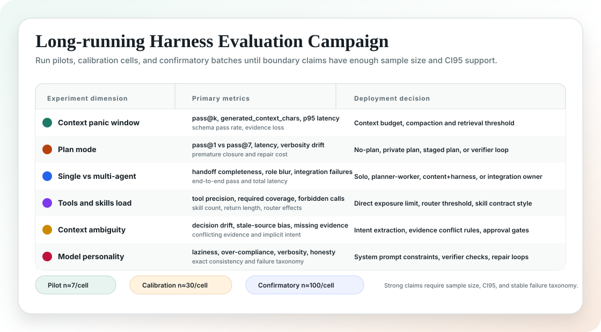
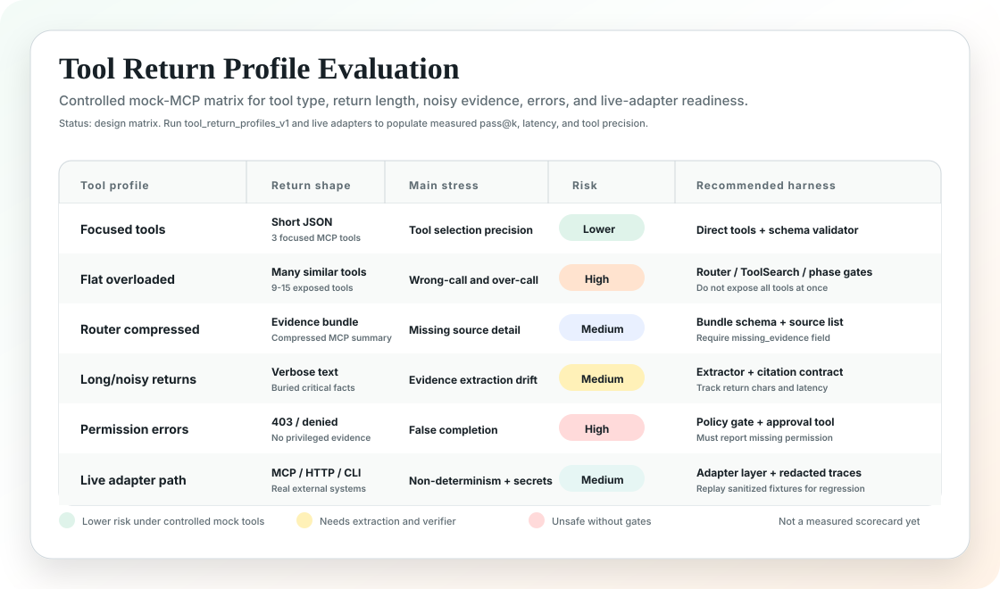
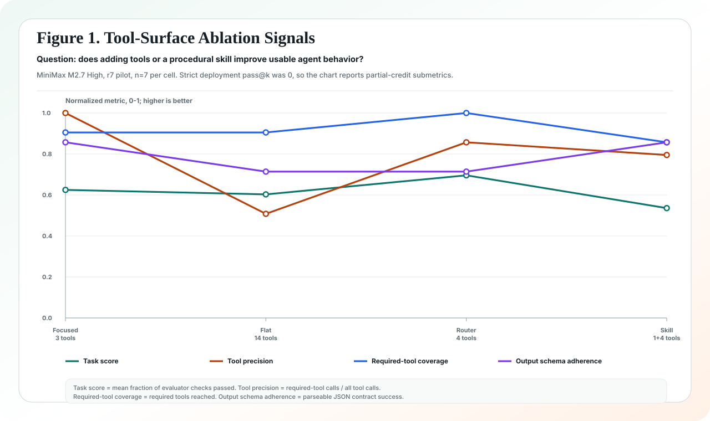
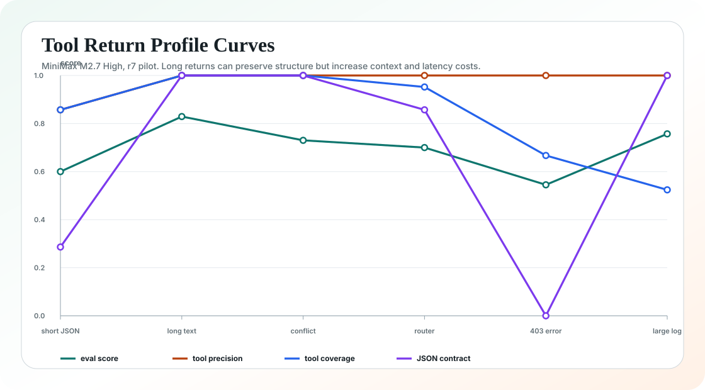
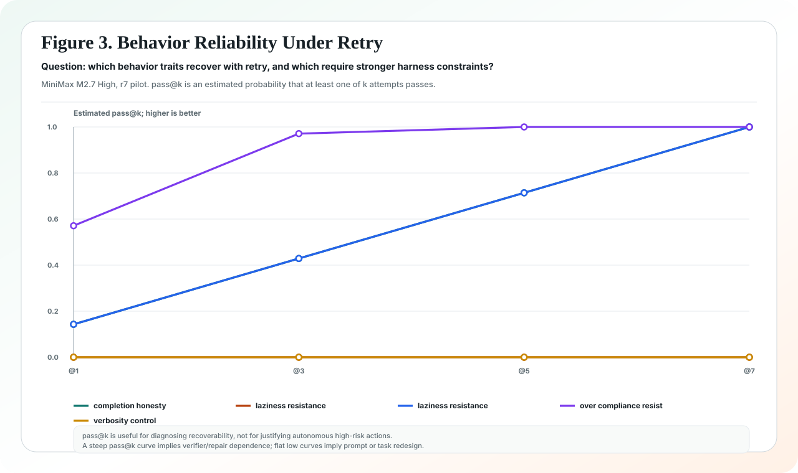

Agent Peak Bench
面向 Agent 落地的综合评估项目：把真实任务、子能力观测、端到端稳定性、失败归因、harness 设计和模型使用指南合并到一份主报告中。
本轮仅以 MiniMax M2.7 High 作为首个 case study；Agent Peak Bench 本身是模型无关评测体系。
主报告
所有评估结论、方法论、OpenClaw 复杂任务方向、工具/skills/MCP 归因和 MiniMax M2.7 High 使用指南，都收敛到同一份综合报告。
评估闭环
项目不追求一个孤立分数，而是把结果映射到工程设计。
| 1 | 真实任务设计 |
| 2 | 子能力观测与端到端完成率 |
| 3 | pass@k 稳定性和工具调用质量 |
| 4 | CI95、latency、context chars、schema pass rate |
| 5 | 失败归因、harness 设计与模型使用指南 |
Long-running Campaign
当前目标不是一次性 smoke test，而是持续数天到数周的实验 campaign：pilot scan、calibration cells、confirmatory boundary run。每个 cell 输出样本量、CI95、pass@k、工具精度、上下文长度、延迟分布、schema 通过率和失败归因。

主评测集
| Suite | Purpose | What It Tests |
|---|---|---|
enterprise_agent_landing_v3 |
企业级 Agent 端到端任务 | 潜台词理解、企业资料查询、多 MCP 工具调用、权限治理、复杂需求拆解、长任务恢复。 |
tool_skill_mcp_ablation_v3 |
工具/skills/MCP 归因 | 3 工具直连、14 工具平铺、router 分层、procedural skill 对稳定性的影响。 |
tool_return_profiles_v1 |
工具返回 profile 归因 | 短 JSON、长噪声返回、冲突证据、router bundle、权限错误、大型日志 artifact。 |
openclaw_complex_agent_tasks_v1 |
OpenClaw 风格复杂任务 | personal OS、语音生产修复、异步 GitHub、多 Agent 运营、插件治理、长期记忆安全。 |
工具返回 Profile 矩阵

MiniMax M2.7 High Live r7 Pilot
已完成 4 组 live r7 pilot，共 133 trials。r7 是 pilot，不是最终强置信结论；r30 calibration 已在远端后台运行。当前图表只展示脱敏聚合指标，不包含 API key 或原始 trace。
图中曲线是用于归因的子指标：Task score 是部分得分，Tool precision 是工具调用精度，Required-tool coverage 是必要工具覆盖率，Output schema adherence 是输出结构契约通过率。


